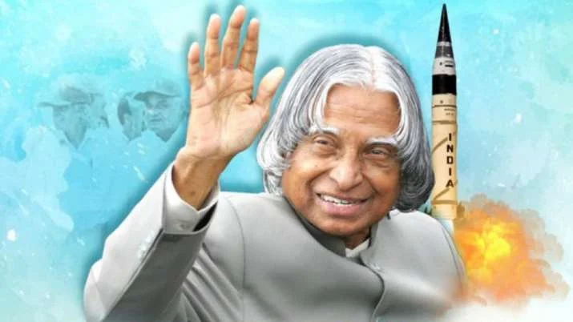

Dr APJ Abdul Kalam
You have to dream before your dreams can come true.

Here's a time line of Dr APJ Abdul kalam
- Born - 15 October 1931
- Full Name -Avul Pakir Jainulabdeen Abdul Kalam
- Known as - Missile Man of India
- Education -After completing his education at Schwartz Higher Secondary School, Ramanathapuram, Kalam went on to attend the St. Joseph's College, Tiruchirappalli from where he graduated in Physics in 1954.[23] Kalam moved to Madras in 1955 to study aerospace engineering in Madras Institute of Technology.
-
Career as a scientist
-
1. Joined Defence Research and Development Organisation (DRDO) in 1958 as a junior scientist.
2. Worked on various projects, including the development of India's first satellite launch vehicle, SLV-3.
3. Contributed to the development of India's guided missile program, including the Agni and Prithvi missiles.
4. Joined Indian Space Research Organisation (ISRO) in 1969 as the project director for SLV-3.
5. Played a key role in the successful launch of India's first satellite, Aryabhata in 1975.
6. Contributed to the development of India's Polar Satellite Launch Vehicle (PSLV) and Geosynchronous Satellite Launch Vehicle (GSLV).
- Presidency -A.P.J. Abdul Kalam, India's 11th president, served from 2002 to 2007. During his presidency, he focused on science and technology, aiming to inspire the youth of India .
-
Post-presidency
-After leaving office, Kalam became a visiting professor at the Indian Institute of Management Shillong, the Indian Institute of Management Ahmedabad, and the Indian Institute of Management Indore; an honorary fellow of Indian Institute of Science, Bangalore;[81] chancellor of the Indian Institute of Space Science and Technology Thiruvananthapuram; professor of Aerospace Engineering at Anna University; and an adjunct at many other academic and research institutions across India. He taught information technology at the International Institute of Information Technology, Hyderabad, and technology at Banaras Hindu University and Anna University.
In May 2012, Kalam launched a programme for the youth of India called the What Can I Give Movement, with a central theme of defeating corruption. -
Death
-On 27 July 2015, Kalam travelled to Shillong to deliver a lecture on "Creating a Livable Planet Earth" at the Indian Institute of Management Shillong. While climbing a flight of stairs, he experienced some discomfort, but was able to enter the auditorium after a brief rest.[87] At around 6:35 p.m. IST, only five minutes into his lecture, he collapsed.[88][89] He was rushed to the nearby Bethany Hospital in a critical condition; upon arrival, he lacked a pulse or any other signs of life.[88] Despite being placed in the intensive care unit, Kalam was confirmed dead of a sudden cardiac arrest at 7:45 p.m. IST.[88][90][91] His last words, to his aide Srijan Pal Singh, were reportedly: "Funny guy! Are you doing well?"
Following his death, Kalam's body was airlifted in an Indian Air Force helicopter from Shillong to Guwahati, from where it was flown to New Delhi on the morning of 28 July in an air force C-130J Hercules. The flight landed at Palam Air Base that afternoon and was received by the then President Pranab Mukherjee, the then Vice-President Hamid Ansari, the Prime Minister Narendra Modi, Chief Minister of Delhi Arvind Kejriwal, and the three service chiefs of the Indian Armed Forces, who laid wreaths on Kalam's body.[93] His body was then placed on a gun carriage draped with the Indian flag and taken to his Delhi residence at 10 Rajaji Marg; there, the public and numerous dignitaries paid homage, including former prime minister Manmohan Singh, Congress President Sonia Gandhi and Vice-president Rahul Gandhi, and Uttar Pradesh Chief Minister Akhilesh Yadav.